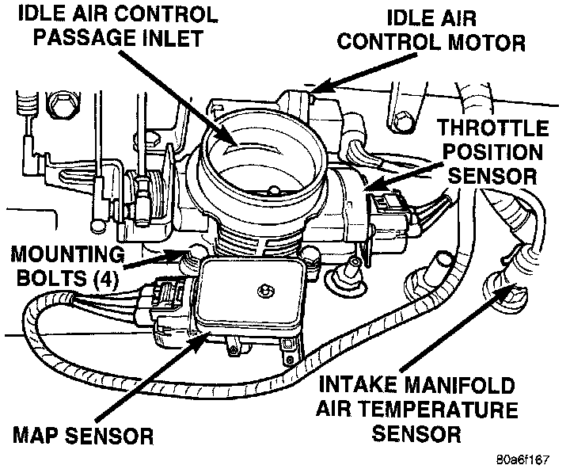
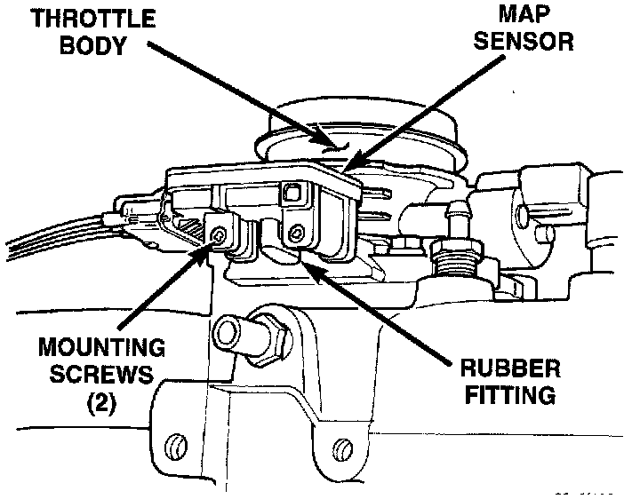

Barometric Pressure Sensor: Service and Repair
MANIFOLD ABSOLUTE PRESSURE (MAP) SENSOR-4.0L ENGINEFig. 75 Map Sensor:

Fig. 75 MAP Sensor Fitting:

The Manifold Absolute Pressure (MAP) sensor is mounted to the side of the throttle body (Fig. 75). An L-shaped rubber fitting is used to connect the MAP sensor to throttle body (Fig. 76).
REMOVAL
1. Remove air cleaner intake tube at throttle body
2. Remove two MAP sensor mounting bolts (screws) (Fig. 76).
3. While removing MAP sensor, slide the rubber L-shaped fitting (Fig. 76) from the throttle body.
4. Remove rubber L-shaped fitting from MAP sensor.
INSTALLATION
1. Install rubber L-shaped fitting to MAP sensor.
2. Position sensor to throttle body while guiding rubber fitting over throttle body vacuum nipple.
3. Install MAP sensor mounting bolts (screws). Tighten screws to 3 Nm (25 in. lbs.) torque.
4. Install air cleaner intake tube.